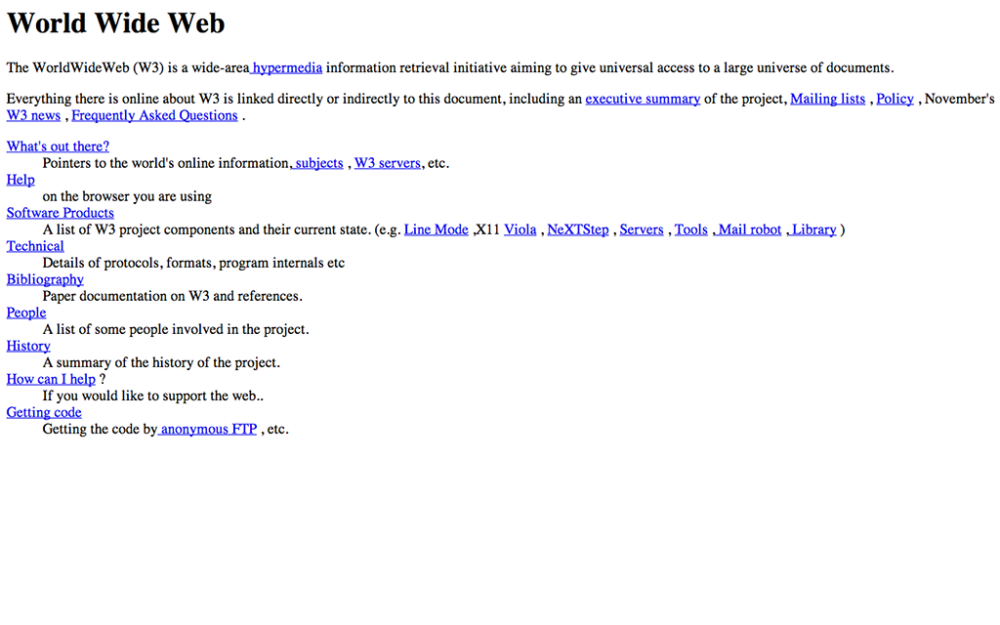

Yours Truly, Famous Inc.
for Stuzo team
No styles
Average webpage has 45Kb of CSS (by HttpArchive)
It's about 2000 lines of css file
And it's an average website. We have more.
Superset of CSS.
Compiles to CSS by external tool.
$pageWidth: 1024px;$mainTextColor: #5C5C5Cbody {color: $mainTextColor;}.container {width: $pageWidth;}
Useful to create and manage styleguides.
Much more useful when combined with other preprocessor features.
$defaultTextSize: 14px.h1 {font-size: $defaultTextSize + 12;}.h2 {font-size: $defaultTextSize + 8;}
Much more readable styles:
.some_element {width: 322px;}
.some_element {width: $pageWidth - $sizebarWidth - $defaultMargin;}
.article {a {font-color: $linkColor;text-decoration: underline;&:hover {text-decoration: none;}}}
.error {border: 1px #f00;background-color: #fdd;}.seriousError {@extend .error;border-width: 3px;}
@mixin vendor-prefix($name, $argument) {-webkit-#{$name}: #{$argument};-ms-#{$name}: #{$argument};-moz-#{$name}: #{$argument};-o-#{$name}: #{$argument};#{$name}: #{$argument};}p {@include vendor-prefix(hyphens, auto)}
@import "reset";@import "styleguide";@import "layout";